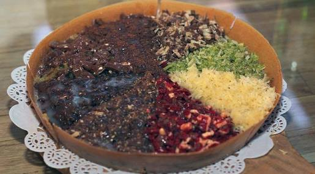
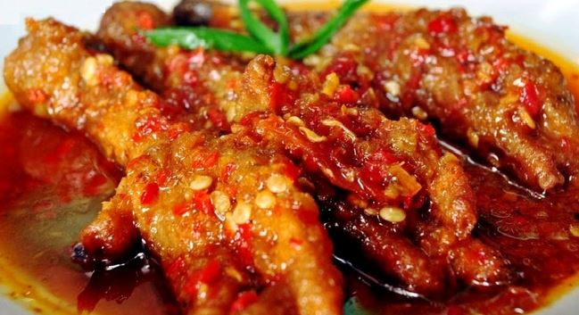

Di Posting Oleh Novita Sari

KULINER JOGJA: Kenikmatan Mie Ayam Tumini Yang Tiada Duanya
Mie Ayam adalah makanan yang begitu digemari oleh masyarakat Indonesia. paduan mie dan irisan daging menciptakan kenikmatan yang yang luar biasa. …
Read More →
Di Posting Oleh Novita Sari

KULINER SOLO: MARKOBAR (Martabak Kota Barat)
Haii guys, pasti udah tahu dan familiar dengan makanan yang satu ini. Khususnya Warga Solo dan sekitarnya. Pasti udah familiar banget dengan martabak manis yang lagi ngehits, apalagi kalo bukan markonar alias amrtabak kota barat.
Read More →
Di Posting Oleh Novita Sari

RESEP: Ceker Pedas Setan
Tips Cara Membuat Resep Ceker Pedas Setan Masakan Pedas Spesial. Kalau melihat namanya mungkin memang agak aneh dan terdengar menyeramkan. Setan memang biasanya identik dengan sesuatu yang menakutkan dan menyeramkan, tetapi tidak dengan yang resep masakan Indonesia yang satu ini.
Read More →